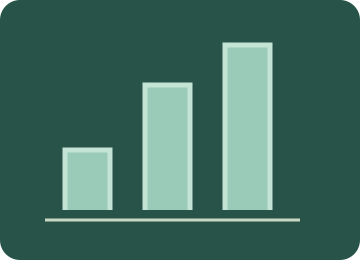

Statistics
Turn data into clear displays and conclusions. Build and read charts, explore averages and quartiles, and interpret discrete frequency tables.

What will you learn?
- Construct and interpret pictograms, bar charts and pie charts.
- Find mean, median, mode, range and quartiles from lists.
- Use discrete frequency tables, including weighted means and ordered positions.
- Interpret pie-chart proportions and justify conclusions from data.
Build the idea, one step at a time.
Data are observations collected to answer a question. A variable is what is recorded, such as travel method or number of siblings. Discrete numerical data are counts that take separate values. Frequency f means how many times a category or value occurs, and total frequency N counts all observations. State the question and labels before drawing a chart.
A pictogram uses a key to say how many observations each full symbol represents. A bar chart compares frequencies using bar heights on a labelled scale. A pie chart shows shares of one whole: sector angle = (f/N) × 360°. Mean is total divided by N; median is the sorted middle; mode is the most frequent value; range is largest minus smallest. Here Q₁ and Q₃ are medians of the lower and upper halves, excluding the overall median when N is odd.
01 · Decode a pictogram key
Use a key to convert symbols and parts of symbols into frequencies.
Start with a key of 1 or 2. Count full symbols first, then any fraction of a symbol.
The key tells you how many observations a full symbol represents. A half symbol represents half the key value. The frequency stays the same when you choose a different key; only the number of symbols changes.
Bus 3 symbols · Walk 4 · Car 2 · Cycle 1
02 · Build and read a bar chart
Turn the frequency table into bar heights on a zero-based scale.
Read the scale one step at a time. The target table remains beside the graph.
Frequency means how often a category occurs. Each bar height must match the table, and the labelled vertical scale starts at zero. Gaps separate the different categories; bar width does not represent a measured interval.
Your chart matches the survey.
| Value / category | Frequency f |
|---|---|
| Bus | 6 |
| Walk | 8 |
| Car | 4 |
| Cycle | 2 |
03 · Construct a pie chart from frequencies
Use each category’s fraction of the total to calculate its angle; all sectors must total 360°.
This total divides 360 exactly. Find the angle for one observation first.
For discrete data, frequency f counts observations and total N counts all observations. Sector angle = (f/N) × 360°. A complete circle alone does not prove the categories have the correct shares. Excess entered angles are clipped in the picture and reported in the total.
The pie chart matches every category.
| Value / category | Frequency f |
|---|---|
| Bus | 4 |
| Walk | 3 |
| Car | 2 |
| Cycle | 3 |
04 · Mean, median, mode, range and quartiles
Sort data and distinguish measures of centre, spread and position.
Begin with no more than ten values. Number the sorted positions before finding a median or quartile.
The mean is the total divided by N. The median is the middle value after sorting; with an even N, average the two middle values. Modes have the greatest frequency; a set can have several or none. Range is maximum minus minimum. Here quartiles are medians of the lower and upper halves, excluding the overall middle value when N is odd.
N = 7 · mean 5.714 · median 5 · mode 4 · range 8 · Q₁ 4 · Q₃ 8
You can read these explanations without operating the simulator. The practical activities, games and revision below let you apply the ideas and check your reasoning.
Now investigate →Predict. Change. Explain.
Read the explanations, work on paper, then use the model to check a prediction. Practice here is separate from a recorded Test yourself quiz.
Compare, explain and try again
All instructions, models and worked examples are on this platform. Use “A little support” for a guided method, or “Go further” for extensions. Your working notes and lesson checks are not sent to the teacher.
Try it. Solve it. Play again.
Data Detectives and Frequency Factory: move cards, build a model and use feedback to work out the next step.
Ready to test your understanding?
Explore 60 questions for Statistics. Select question areas and levels, practise with explanations or take Test yourself, then retry mistakes.